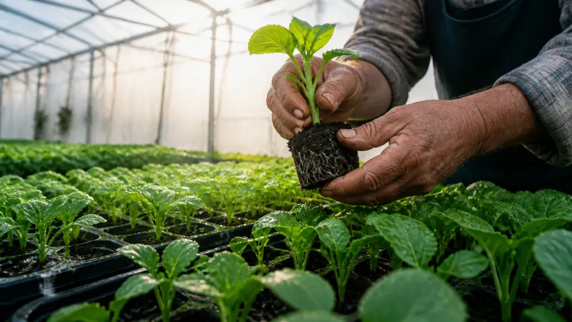

Antes $1,050 MXN
$550MXN
Pago único · acceso sin vencimiento
- Curso online grabado
- Cinco módulos oficiales
- Cinco horas de formación
- Materiales dentro del curso
- Certificado sujeto a acreditación
AGROTEC América · Formación online
Comprende tus cultivos, identifica problemas y toma mejores decisiones agrícolas.
Una ruta clara para entender suelo, nutrición, riego, sanidad vegetal y planeación sin tecnicismos innecesarios.
Compra segura próximamente · todavía no se realizan cargos.
01 / Resultados
Selecciona un tema para ver qué podrás identificar y aplicar al finalizar.

01Cultivos
Relaciona el funcionamiento de la planta con los factores que explican un buen rendimiento.
02 / Temario
Contenido oficial organizado como una ruta práctica. Abre cada módulo para conocer sus temas.
Aprende con experiencia de campo
Ingeniera Agrónoma especialista en Recursos Naturales, con más de 15 años de experiencia profesional.
La Ing. Irene del Pilar García Pérez es Ingeniera Agrónoma especialista en Recursos Naturales por la Universidad Veracruzana, Facultad de Ciencias Agrícolas, Campus Xalapa, donde realizó su formación entre 2000 y 2005, obteniendo título y cédula profesional.
Cuenta con formación complementaria en cafeticultura, agricultura orgánica, certificaciones y desarrollo rural.
Posee más de 15 años de experiencia en asesoría técnica, extensionismo rural, agricultura sustentable, agroecología y proyectos productivos.
Ha colaborado con instituciones y organizaciones del sector agropecuario, incluyendo programas de la Secretaría de Desarrollo Agropecuario, Rural y Pesca de Veracruz, Agroindustrias Unidas de México, asociaciones cafetaleras y consejos estatales del café.
Su experiencia incluye capacitación a productores, certificación orgánica y fortalecimiento de cadenas productivas, particularmente en los sectores cafetalero y de caña de azúcar.
Ha recibido reconocimientos por sus actividades como ponente, capacitadora y asesora técnica en desarrollo rural y producción agrícola.
04 / Certificado
IPCIL · Certificación digitalCertificado oficial emitido por IPCIL con folio verificable.
La compra no genera el certificado de forma automática. Su emisión está sujeta al proceso autorizado de acreditación y validación de IPCIL.
05 / Experiencia
Interfaz ilustrativa. El aula y la entrega automática de acceso se implementarán en una fase posterior.
06 / Inscripción
Accede a una formación introductoria, clara y aplicable para comprender mejor cualquier proyecto agrícola.
Antes $1,050 MXN
Pago único · acceso sin vencimiento
07 / Preguntas
Es un curso online con clases grabadas para avanzar a tu propio ritmo.
La formación tiene una duración total de cinco horas.
No. El acceso está planteado sin fecha de vencimiento.
Sí. El aula estará preparada para consultarse desde celular, tableta o computadora.
La entrega automática del aula se habilitará antes de activar los cobros. Esta versión todavía no procesa pagos.
Se emitirá de forma digital por IPCIL, después de cumplir los criterios de aprobación y conforme al mecanismo autorizado de validación.
AGROTEC América · Formación online